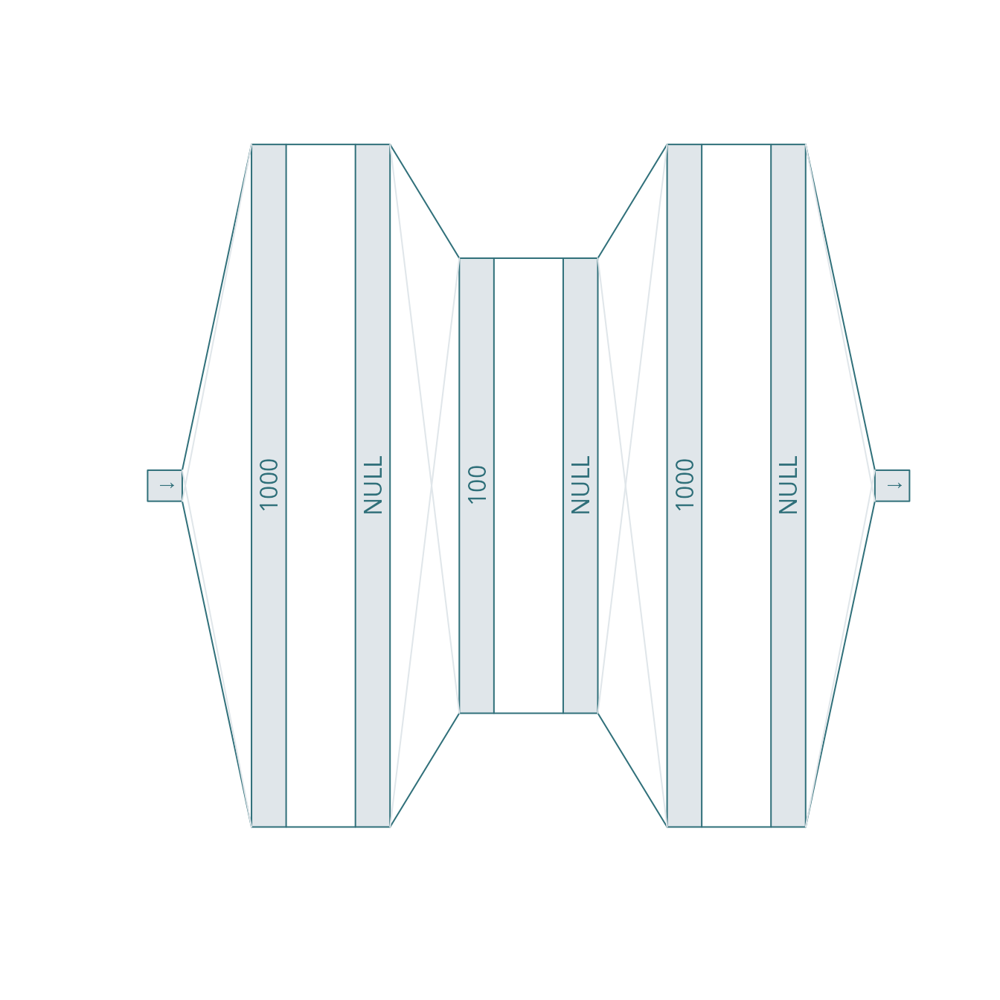

Ruta allows creating the neural architecture of autoencoders in several ways. The easiest way is to use an integer vector describing the number of units of each hidden layer in the encoder:
library(ruta)
net <- c(1000, 100)
net |> as_network() |> print()
#> Network structure:
#> input
#> dense(1000 units) - linear
#> dense(100 units) - linear
#> dense(1000 units) - linear
#> dense - linearThe input and output layers have an undetermined size until training data is used and the autoencoder is converted onto a Keras model.
By using separate functions for each layer type, one may define the activations at the output of each layer:
net <-
input() +
dense(1000, "relu") +
dense(100, "tanh") +
dense(1000, "relu") +
output("sigmoid")
print(net)
#> Network structure:
#> input
#> dense(1000 units) - relu
#> dense(100 units) - tanh
#> dense(1000 units) - relu
#> dense - sigmoid
plot(net)
Other available layers are dropout and other Keras
layers via the layer_keras function:
act_reg <- layer_keras("activity_regularization", l1 = 0.01)
net <-
input() +
dense(1000, "relu") + dropout() +
dense(100, "tanh") + act_reg +
dense(1000, "relu") + dropout() +
output("sigmoid")
print(net)
#> Network structure:
#> input
#> dense(1000 units) - relu
#>
#> dense(100 units) - tanh
#>
#> dense(1000 units) - relu
#>
#> dense - sigmoid
plot(net, log = TRUE, fg = "#30707a", bg = "#e0e6ea")